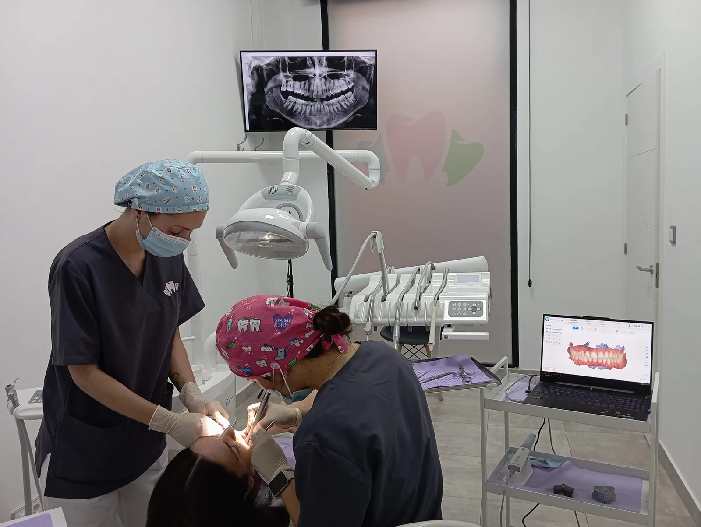
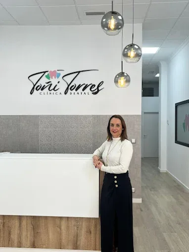
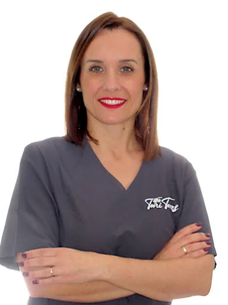
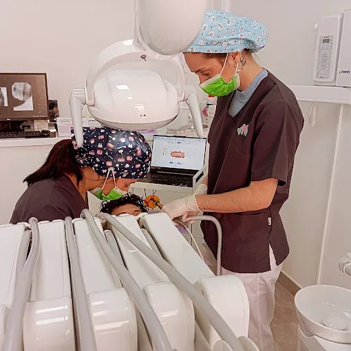
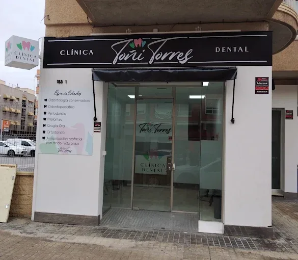
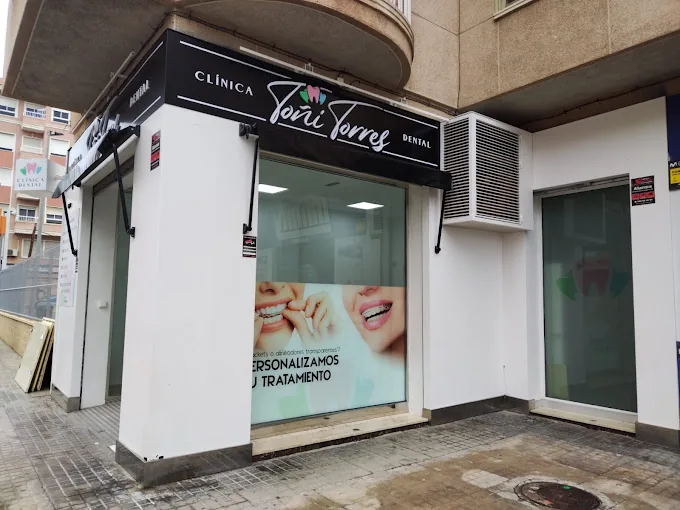

Tu clínica dentalen Elche
Más de 20 años cuidando la salud dental de las familias de Elche, con atención cercana y diagnóstico digital.
Pedir cita online
Toñi Torres y su equipo te atienden a pie de calle, en Capità Antoni Mena, 153. +20 años en ElcheSobre la clínica


Cuidamos la salud dental de toda la familia con tratamientos personalizados, tecnología digital y un trato cercano, para que salgas de la consulta con una sonrisa sana y segura.
Niños, adultos y mayores en un mismo centro, con nueve especialidades: desde la revisión periódica hasta la implantología y la estética dental.
Ver tratamientos
Atención cercana y diagnóstico digital
Radiografía y escaneado en pantalla para que veas lo mismo que vemos en consulta y entiendas cada paso de tu tratamiento.
Toñi Torres
Clínica Dental Toñi Torres
Toñi Torres y su equipo te acompañan desde la primera visita hasta el final de tu tratamiento.
Pedir citaTratamientos dentales en Elche
-
Odontología general
Revisiones, limpieza profesional, empastes y diagnóstico con radiografía digital.
Pedir cita -
Ortodoncia invisible y brackets
Corrección de la posición dental con alineadores transparentes o brackets.
Pedir cita -
Implantología
Reposición de piezas perdidas con implantes dentales.
Pedir cita -
Urgencias dentales
Dolor, traumatismos o piezas fracturadas. Llámanos y te daremos cita lo antes posible.
-
Estética dental
Blanqueamiento, carillas y coronas para mejorar el color y la forma de los dientes.
Pedir cita -
Odontopediatría
Atención dental para niños y adolescentes: revisiones, prevención y tratamiento de caries.
Pedir cita -
Periodoncia
Diagnóstico y tratamiento de las encías: gingivitis, periodontitis y mantenimiento.
Pedir cita -
Cirugía oral
Extracciones y pequeñas intervenciones de cirugía bucal.
Pedir cita -
Armonización orofacial
Tratamientos faciales con ácido hialurónico.
Pedir cita
A pie de calle en Carrer Capità Antoni Mena, 153, en Elche.
Una clínica cercana, con atención profesional y tecnología avanzada para todas las edades.
-
Recepción
Te recibimos sin prisas
Gestionamos tu cita y tu historial desde la recepción de la clínica.
-

AccesoA pie de calle
Entrada directa desde la calle, bajo el rótulo negro del número 153.
-
Gabinete
Tecnología en consulta
Radiografía y escaneado digital para un diagnóstico más preciso.
Preguntas frecuentes
Si tienes cualquier otra duda, llámanos al 614 22 68 60 o escríbenos por WhatsApp.
¿Dónde está la Clínica Dental Toñi Torres?
En Carrer Capità Antoni Mena, 153, bajo, 03204 Elche (Alicante). La clínica está a pie de calle.
¿Qué horario tiene la clínica?
De lunes a viernes, de 9:00 a 20:00. Sábados, domingos y festivos nacionales permanece cerrada.
¿Atendéis urgencias dentales en Elche?
Sí. Si tienes dolor, has sufrido un golpe o se te ha roto una pieza, llama al 614 22 68 60 y te daremos cita lo antes posible.
¿Cómo puedo pedir cita?
Puedes pedir cita online eligiendo motivo, día y hora, o llamar o escribir por WhatsApp al 614 22 68 60. La clínica te confirma la cita por teléfono o WhatsApp.
¿Hacéis tratamientos para niños?
Sí. Contamos con odontopediatría para niños y adolescentes, además de tratamientos para adultos y personas mayores.
¿Ofrecéis ortodoncia invisible?
Sí. Trabajamos con alineadores transparentes y también con brackets, según lo que mejor se adapte a cada caso.
Horario y cómo llegar
Carrer Capità Antoni Mena, 153, bajo03204 Elche, Alicante
El mapa se carga desde Google solo si lo pides.